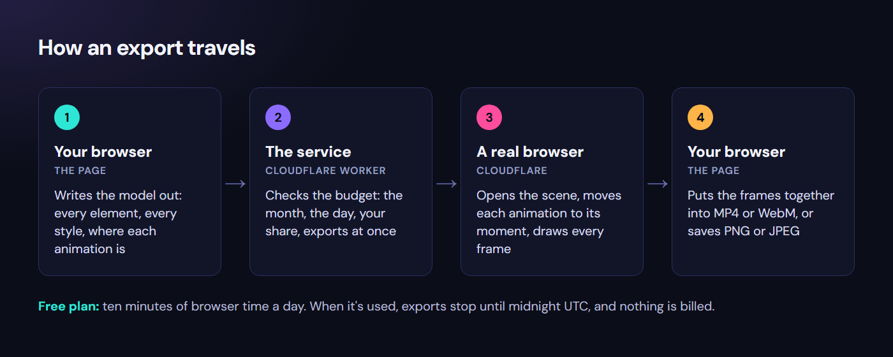
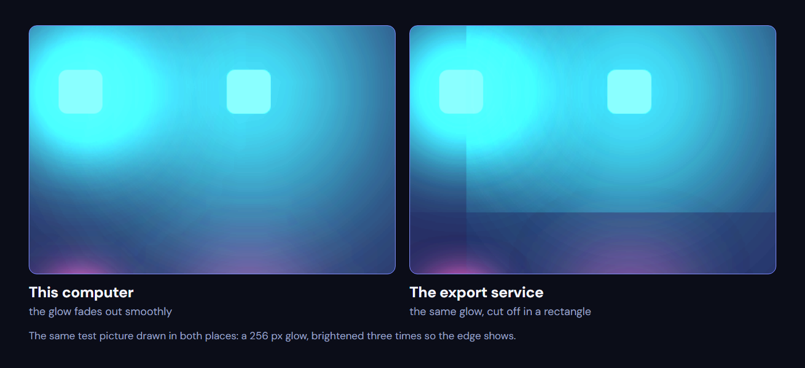
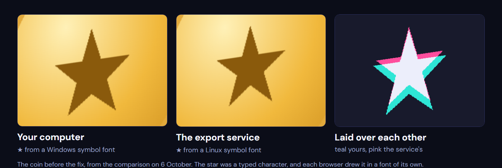

The same ten free minutes a day: about three pictures before the rework, more than a hundred after. Image: Edgaras Neverdauskas.The same ten free minutes a day: about three pictures before the rework, more than a hundred after. Image: Edgaras Neverdauskas.

An export goes out as a description of the model and comes back as frames; only step 3 uses the free allowance.

A 256 px glow drawn in both places and brightened three times: smooth here, cut off in a rectangle on the service.Recreated on 8 October: the same card with its text in the system font, as it was before the fix, drawn by this computer and by the export service from one scene.

The coin before its star was drawn as a shape, from the comparison on 6 October: the same typed ★, in two different fonts.